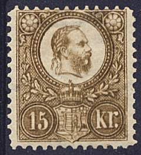
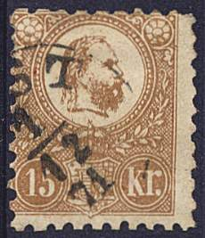
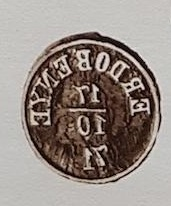
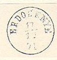
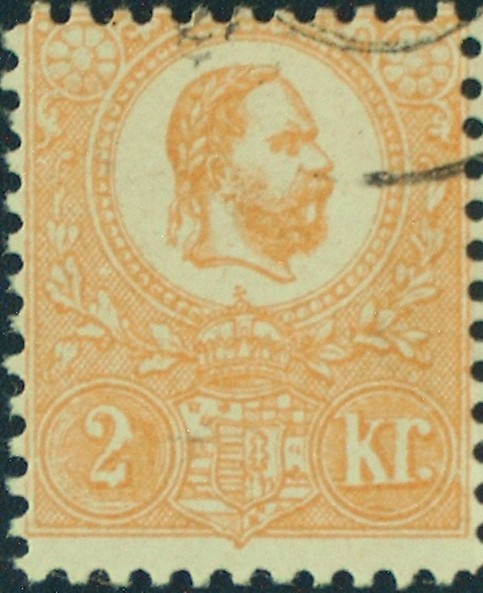
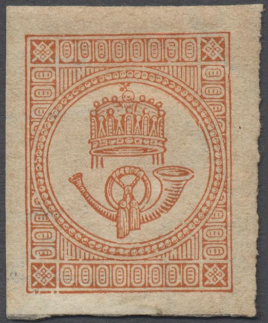
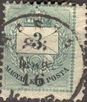
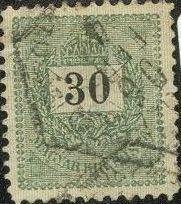
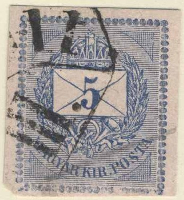

Hongrie - Ungarn
Return To Catalogue - Hungary 1916-1920 - Hungary local overprints of 1919 - Miscellaneous - Western Hungary (Lajtabansag) - Hotel post (Kurhaus Hohen Rinne)
Note: on my website many of the
pictures can not be seen! They are of course present in the
catalogue;
contact me if you want to purchase the catalogue.


2 Kr orange 3 Kr green 5 Kr red 10 Kr blue 15 Kr brown 25 Kr lilac
Envelopes in the same design exist in the values 3 Kr geen, 5 Kr red, 10 Kr blue and 15 Kr brown. A 2 Kr yellow wrapper and a 2 Kr yellow postcard ('Correspondenz-Karte or Levelezesi Lap') also exist.


For the specialist: these stamps exist both lithographed (no sign of impression on the back and no slanting shade lines near the beard according to 'The Forged Stamps of all Countries' by J.Dorn) and engraved. These stamps are perforated 9 1/2.
Value of the stamps |
|||
vc = very common c = common * = not so common ** = uncommon |
*** = very uncommon R = rare RR = very rare RRR = extremely rare |
||
| Value | Unused | Used | Remarks |
| Lithographed | |||
| 2 k | RRR | RR | |
| 3 k | RRR | RRR | |
| 5 k | RRR | *** | |
| 10 k | RRR | RR | |
| 15 k | RRR | RR | |
| 25 k | RRR | RR | |
Engraved |
|||
| 2 k | R | *** | |
| 3 k | RR | *** | |
| 5 k | R | * | |
| 10 k | RR | *** | |
| 15 k | RRR | *** | |
| 25 k | RR | R | |

Postal stationery in the values 3 k and 10 k in the same design.
I've also seen 5 k red on green.
Reprints exist with perforation 11 1/2 and with watermark 'kr' in a circle. The original stamps are always perforated 9 1/2. Examples of reprints:

I've seen 'reprints' in yellow, green, blue, red, violet and brown in the same design, but with '1871 1921' instead of the value inscriptions:

1921 reprints. I've also seen a minisheet with such an
imperforate reprint.
Budapest reprint (1971); reduced size
Another minisheet with 'reprints' was made in 1971 for the International Stamp Exhibition in Budapest (the perforation is different from the genuine stamps, see image above).
A non-official reprint or 'Reproduktion' made in 1984 for the
'Salon der Philatelie in Hamburg'
Forged cancels exist (especially on envelopes), for more details see: http://www.arge-ungarn.de/forgeries.htm (in German).
Fournier made forgeries of the lithographed stamps by using the envelopes of this country and applying a forged perforation to them (3 kr and 10 kr). He offers them for 5 Swiss Francs (both values) as first choice forgeries in his 1914 pricelist. The envelopes are printed on greyish paper, while the genuine stamps are printed on white papers. Also the colours used on the envelopes are slightly different from the postage stamps. The forged cancel 'ERDOBENYE 17 10 71' can be found in the Fournier Album of Philatelic forgeries.
(Example of a Fournier forgery made from a genuine envelope,
reduced size, with "FAUX" overprint)


Other forgeries made in Turin (Italy) exist (of all values). Some of them seem to be rarer than the genuine stamp. If anybody has more information, please contact me!

Turin forgery, image obtained from
http://www.arge-ungarn.de/forgeries.htm. The perforation is
clearly different from the genuine stamps.
The next stamps are Sperati forgeries. Sperati used genuine paper and cancels and made forgeries of the 2 k, 3 k and 15 k values:


(Sperati forgeries of a 2 k and a 3 k stamp)


Another Sperati forgery of the 3 k value; this forgery is very
deceptive, there is a blotch of green color in the vertical part
of the 'r' of 'kr' (but this can sometimes also been found in the
genuine stamps).

Front and backside of a 15 k Sperati forgery, image obtained from
http://www.arge-ungarn.de/forgeries.htm
Sperati used genuine stamps, removed the image (while keeping the cancel) and then printed a new value on them. In this way, the paper, perforation and cancel are all genuine! I don't know the distinghuishing characteristics of this Sperati forgery. If anybody has more information, please contact me.

(1 Kr) red (horn to the right) (1 Kr) red (horn to the left)
Value of the stamps |
|||
vc = very common c = common * = not so common ** = uncommon |
*** = very uncommon R = rare RR = very rare RRR = extremely rare |
||
| Value | Unused | Used | Remarks |
| (1) k | R | *** | horn to left |
| (1) k | *** | * | horn to right |

Reprint of 1896; I do not know the distinghuishing
characteristics.

2 Kr lilac 3 Kr green 5 Kr red 10 Kr blue 20 Kr grey
Value of the stamps |
|||
vc = very common c = common * = not so common ** = uncommon |
*** = very uncommon R = rare RR = very rare RRR = extremely rare |
||
| Value | Unused | Used | Remarks |
| No watermark, various perforations from 9 to 13 1/2 | |||
| 2 k | R | ** | |
| 3 k | RR | ** | |
| 5 k | R | c | |
| 10 k | RR | * | |
| 20 k | RRR | *** | |
| Watermark 'kr in circle', various perforations from 11 1/2 to 13 1/2 | |||
| 2 k | * | c | |
| 3 k | * | c | |
| 5 k | *** | vc | |
| 10 k | *** | c | |
| 20 k | *** | * | |
1888 Value in black or red (1 F and 3 F)




1 Kr black 2 Kr violet 3 Kr green 5 Kr red 8 Kr orange 10 Kr blue 12 Kr brown 15 Kr red 20 Kr grey 24 Kr lilac 30 Kr green 50 Kr red 1 F grey 3 F brown
Value of the stamps |
|||
vc = very common c = common * = not so common ** = uncommon |
*** = very uncommon R = rare RR = very rare RRR = extremely rare |
||
| Value | Unused | Used | Remarks |
| Watermark 'kr in a circle' or 'Crown in a circle', perforation 11 1/2 | |||
| 1 k | * | c | |
| 2 k | * | c | |
| 3 k | * | c | |
| 5 k | ** | vc | |
| 8 k | *** | * | |
| 10 k | *** | c | |
| 12 k | R | * | |
| 15 k | *** | c | |
| 20 k | *** | * | |
| 24 k | *** | * | |
| 30 k | *** | c | |
| 50 k | RR | * | |
| 1 F | RR | ** | |
| 3 F | R | *** | |
Newspaper Stamp, design slightly different
1 Kr yellow to orange
Value of the stamps |
|||
vc = very common c = common * = not so common ** = uncommon |
*** = very uncommon R = rare RR = very rare RRR = extremely rare |
||
| Value | Unused | Used | Remarks |
| Watermark 'kr in a circle' or 'Crown in a circle', imperforate | |||
| 1 k | * | vc | |
(3 k green envelope cut)
Envelopes in the same design exist: 3 k green, 5 k red and 10 k blue (issued in 1874). Furthermore a wrapper in the value 2 k lilac was issued in 1879. A telegraph card in the value 35 k blue was issued in 1888. A 5 k blue was issued in 1876 for money order forms.

5 k blue money order
For issues of Hungary after 1900, click here.
{kind=link}
{kind=link}
{kind=link}